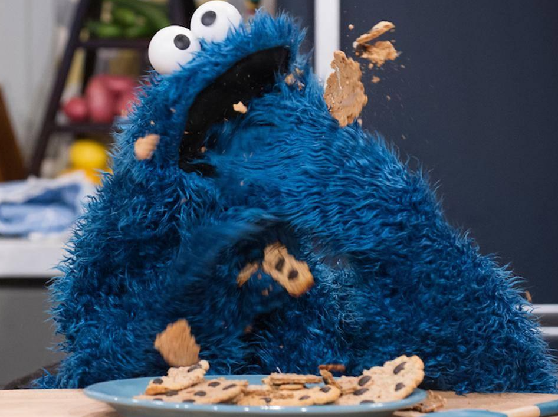

{% extends '_layout.html' %}
{% block title %}Cryptid Catalog | Encyclopedia{% endblock %}
{% block body %}
- BACK
- COOKIE MONSTER
- Type: Terrestrial

- A voracious, furry monster with googly eyes, it has an insatiable appetite. While it primarily eats cookies, it can and will consume anything and everything.
This monster is capable of simple human speech, spoken in a deep, growly voice.
The Cookie Monster was first spotted in 1966, eating crunchy snack foods.
{% endblock %}